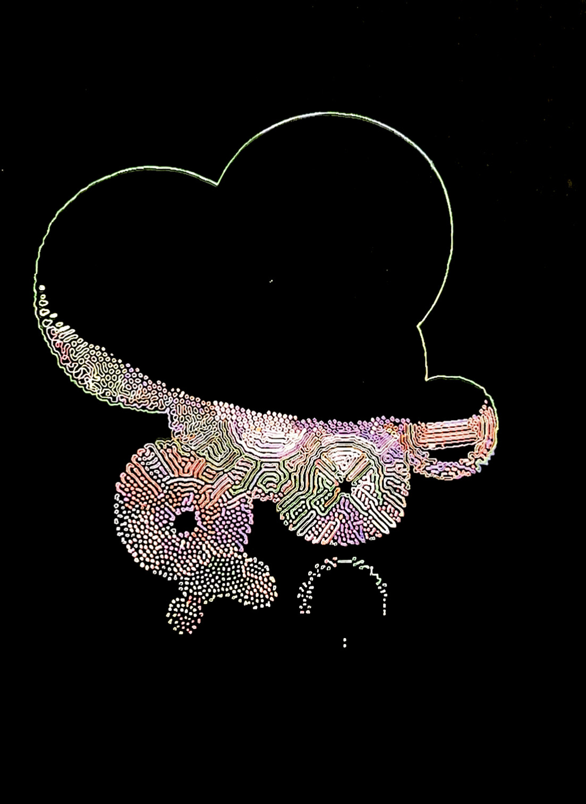
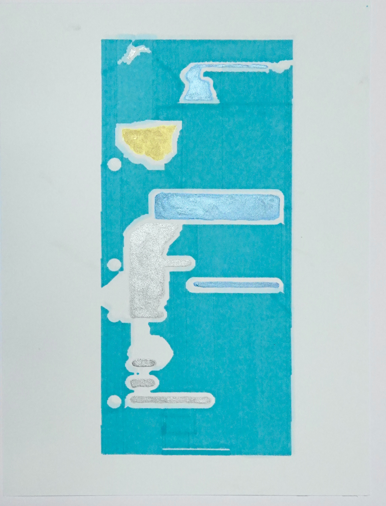
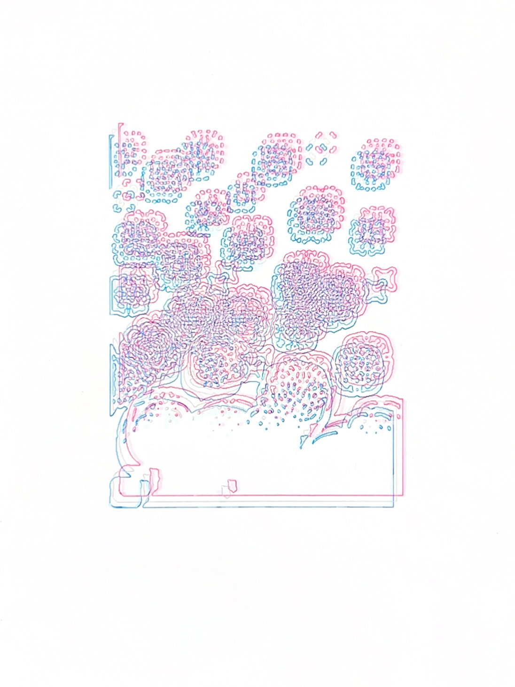
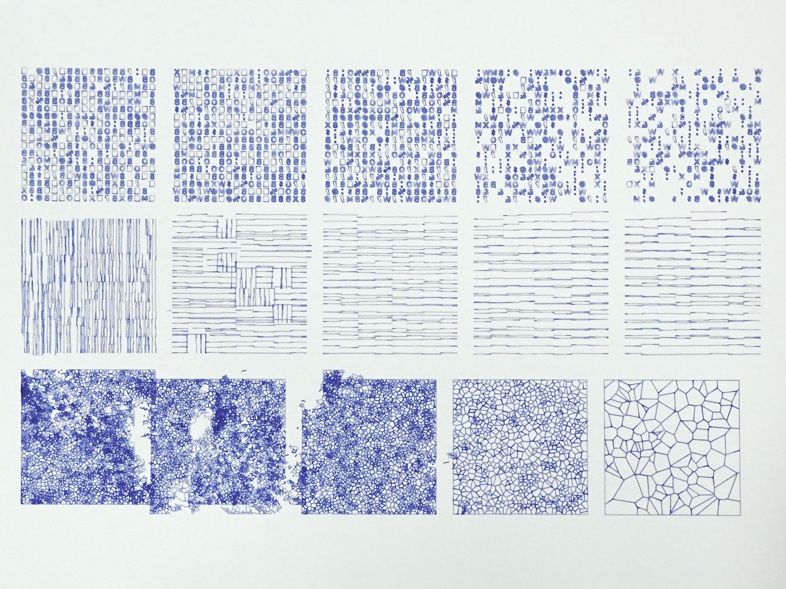
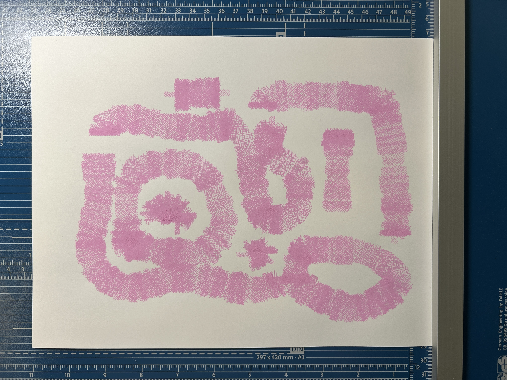
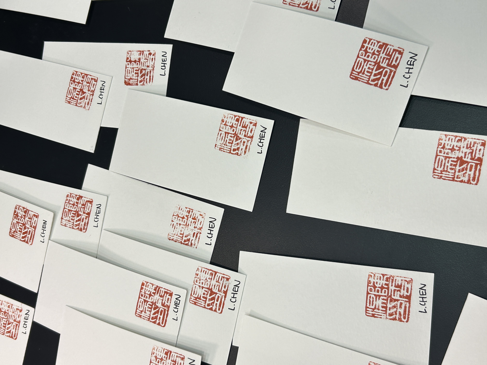

- Building interactive agentic interfaces in JavaScript/p5.js for real-time interaction with Gemini and ComfyUI-based generative AI models.
- Extending ComfyUI pipelines to integrate state-of-the-art generative AI models for new research and creative workflows.
- Developing real-time robot arm control workflows and 3D Gaussian Splatting guidelines for student onboarding.
about
Hi, I'm Lorie Chen — freshly graduated from Carnegie Mellon University with a Bachelor's in Computer Science and Fine Arts. Based in Pittsburgh. Interested in shiny things and radiance fields. I wander around the city, take pictures, and occasionally make plotters do things.










experience
- Designed and built 5+ interactive web interfaces for real-time user interaction with AI models including Gemini, ComfyUI pipelines, and vocal ML systems.
- Extended open-source p5.js ComfyUI libraries to support cloud-based RunComfy instances.
- Developed novel AI video and 3D processing workflows for After Effects in C++, contributing to unannounced research features.
- Enhanced user experience and robot perception for the CoFRIDA robotic painting system using OnShape and 3D printing.
- Demonstrated new capabilities at IEEE RO-MAN 2024 to an audience of 50+ and presented to a panel of expert judges.
contact
Drop me a line or share a pun.